КОМПЛЕКТ ИГРЫ
В комплект игры «Корона Эмбера» входят:
— игровое поле (1 шт.)
— карты путников (19 шт.)
— игровое поле «КОРОЛЕВСТВО ЭМБЕР» (1 шт.)
— игровые карты путников, состоящие из портрета и подставки (19 шт.)
карты принцев для игрового поля «КОРОЛЕВСТВО ЭМБЕР» (5 шт.)
— игровые карты принцев (5 шт.)
— карты приключений (200 шт.)
карты предметов, амулетов и заклинаний (70 шт.)
деньги (они же талеры или золото)
— игровые пункты (от 1 до 17 пунктов)
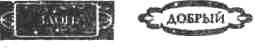
— 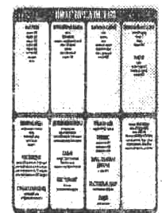
— вспомогательное поле предметов (1 шт.)
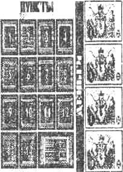
вспомогательное поле пунктов и денег (1 шт.)
подставка для игровых карт путников или принцев 5 шт.
- 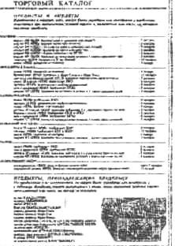
— кубик
— и, наконец, настоящие Правила, или Книга Пути...
ПРОЧТИТЕ ЕЕ ВНИМАТЕЛЬНО И ПОСТАРАЙТЕСЬ ЗАПОМНИТЬ!
Перед началом игры вам следует подготовить игровой комплект — вырежьте карты путников, игровые карты путников, карты приключений, карты предметов, амулетов и заклинаний, карты принцев и игровые карты принцев, деньги (талеры), игровые пункты и измененные свойства путников (их внешний вид смотрите выше).
После того, как вы все это вырезали, разложите карты предметов, амулетов и заклинаний, игровые пункты и деньги (талеры) по месту их расположения на вспомогательных полях:
— карты предметов, амулетов и заклинаний — на поле предметов изображением вверх:
К 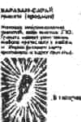 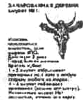
— подобным же образом разложите и все остальные карты предметов, амулетов и заклинаний.
— игровые пункты (от 1 до 17 пунктов) и деньги (достоинством от 1до 10 талеров) разместите на вспомогательном поле пунктов и денег по месту их расположения.
Карты приключений (200 шт.) соберите в колоду, перетасуйте и положите в удобное для игроков место изображением вниз.
Проделайте то же самое с картами путников.
Достаньте игровые поля (впрочем, игровое поле «КОРОЛЕВСТВО ЭМБЕР», карты принцев и игровые карты принцев в первой части игры вам не понадобятся).
Итак, вы во всеоружии! Медленно поднимается занавес, вспыхивают огни «юпитеров», и очень обаятельный господин подходит к микрофону. Зал на мгновение замирает...
Так что же — с Богом!
КОРОНА ЭМБЕРА
Настольная фэнтези - игра по мотивам сериала Роджера Желязны «ЯНТАРНЫЕ ХРОНИКИ».
Уважаемые господа, леди и джентльмены, мадам и месье, мучачас и амигос, сэры, мэны и даже (прости Господи!) товарищи! Представьте себе: живете вы, живете... дом-работа-дом... дом-работа-дом... работа-дом-работа... деньги – товар - деньги... кончились деньги... Короче, будни. И вдруг приходит к вам Весть (способом любым — телеграмму принесли, старушка-странница в окно постучала, объявление в газете на глаза попалось, сон вещий привиделся)... вы, оказывается, не простой гражданин, но принц запредельного королевства Эмбер. Старый Король умер, и вам предстоят династические хлопоты, дальняя дорога да пиковый интерес. Осталось лишь вытянуть из колоды карту, зажмуриться, сделать шаг в сторону — и вы окажетесь в очень странном мире в не менее странном обличии. Подобное приключение выпадает раз в жизни, и стоит рискнуть!
Решились? Тяните карту своего путника! Ознакомьтесь с нею.
КАРТА ПУТНИКА
К 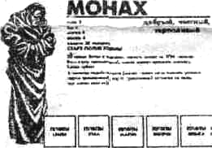
здесь же имеется шкала (пункты силы, пункты ума, пункты магии, пункты жизни, пункты опыта), на которой в дальнейшем фиксируются изменения качеств вашего путника и возрастание его опыта.
Возьмите на вспомогательном поле пунктов и денег и положите на карту своего путника то количество игровых пунктов, с которым вы начинаете игру (учтите, что пунктов опыта у вас пока нет); не стоит также забывать о деньгах — они пригодятся вам в путешествии.
Некоторые из путников первоначально имеют принадлежащие им предметы: допустим, на карте вашего путника указано «всегда имеет бластер», и это означает, что вам следует найти на вспомогательном поле предметов бластер и положить его рядом с картой своего путника.
Установите на подставке портрет вашего путника (место начала пути указано на его карте).
Итак, контрольная проверка.
Н 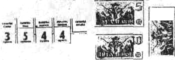
Игровая карта путника заняла исходное положение (найдите место старта на игровом поле)...
Ого, да вы здесь не один!
Вы абсолютно правы: девятнадцать существ получили в свое время Весть. Возможно, не все они решили принять участие в споре за обладание Короной (число путников ограничено числом игроков), и все же, все же... Но знайте: лишь пятеро из них — подлинные принцы крови. Мир приключений, Провалы и Лабиринт для того и существуют, чтобы они могли пройти во дворец и завоевать Корону властителей Янтарного Королевства.
ЦЕЛЬ ИГРЫ
В первой части игры путники передвигаются по игровому полю на бросок кубика, выполняя условия тех полей, на которых они оказались (в том числе берут и выполняют условия карт приключений), покупают в обменных пунктах игровые пункты (ПС, ПУ, ПМ, а в местах торговли — предметы и амулеты, которыми пользуются согласно своего опыта ПО), лечатся в лазарете, вступают в битву с
врагами и нечистью, сдают в заготконтору шкуры, оружие и другие трофеи побежденных ими противников, играют в азартные игры, используют колдовство и заклинания, приручают зверей и на оных же охотятся, ищут клады, покоряют горные вершины, странствуют по прериям, джунглям, зонам мутаций и прочее, и прочее, и прочее...
Самый умелый и удачливый из путников наберет от 11 до 14 (14 — максимальное число!) пунктов силы (ПС), от 11 до 14 пунктов ума (ПУ), от 11 до 14 пунктов магии (ПМ) и от 11 до 14 пунктов опыта (ПО), пройдет через любой из находящихся на игровом поле Провалов, окажется в Янтарном Королевстве (игровое поле «КОРОЛЕВСТВО ЭМБЕР»), превратится в принца и в поединке с другими принцами докажет свое право быть Королем.
ОПИСАНИЕ ИГРОВОГО ПОЛЯ
Игровое поле состоит из четырех Миров, каждый из которых имеет определенный цвет:
Мир Силы — красный;
Мир Ума — зеленый;
Мир Магии — синий;
Мир Золота — естественно, желтый.
В зависимости от мира, в котором находится ваш путник, вы пользуетесь тем или иным своим качеством: к примеру, в Мире Силы путник действует той силой, которая имеется у него на данный момент игры (см. пункты силы (ПС) на карте вашего путника), в Мире Ума или в Мире Магии — соответственно своим умом (ПУ) или своей магией (ПМ).
Пункты жизни (ПЖ) определяют жизнь путника в любом из миров; стоит им стать равными 0 — и путник ваш умирает, а игрок либо выходит из игры, либо берет себе другую карту путника и начинает все сначала.
Пункты опыта (ПО) путник приобретает в процессе игры, выполняя условия карт приключений.
НАЧАЛО ИГРЫ
Игру начинает дама. Если таковой нет на поле, либо дам более одной, начинающий игру путник определяется жребием. Дальнейшая очередность хода — по часовой стрелке.
КАК ПУТЕШЕСТВОВАТЬ ПО ИГРОВОМУ ПОЛЮ
(В ТОМ ЧИСЛЕ ОСТАНАВЛИВАТЬСЯ ПРОХОДОМ)
Перед ходом бросается кубик, и игровая карта вашего путника передвигается на соответствующее результату броска количество полей в любую удобную для игрока сторону.
Переход из Мира в Мир возможен в местах пересечения Миров (они отмечены стрелками); межмировые пространства, в которых расположены лазарет и заготконтора, засчитываются при ходе за одно поле; количество Миров, через которые можно пройти за один ход, не ограничено.
Пример 1: Игровая карта вашего путника находится на поле «КОННЫЕ ВАРВАРЫ» (Мир Силы), и результат броска на ход равен 2.
В этом случае игрок может переместить игровую карту своего путника либо на поле «САВАННА (Мир Силы), либо на поле «КРЕПОСТЬ» (Мир Силы).
Пример 2: С поля «ДЖУНГЛИ» (Мир Силы) при результате броска, равном 3, ваш путник может попасть на поле «ПОЛЫЕ ХОЛМЫ» (Мир Магии), либо на поле «ПОКИНУТЫЙ ДОМ» (Мир Магии), либо на поле «ВЫЖЖЕННАЯ ЗЕМЛЯ» (Мир Ума), либо на поле «ДРЕВО ПОЗНАНИЯ» (Мир Ума), либо на поле «ОАЗИС» (Мир Силы), либо на поле «САВАННА» (Мир Силы), либо, наконец, остановиться проходом на поле «ЗАГОТКОНТОРА». Вы сами выбираете дорогу.
Одним из немаловажных условий игры является то, что вы всегда имеете право остановиться проходом на полях «ЛАЗАРЕТ», «ЗАГОТКОНТОРА», «ОБМЕННЫЙ ПУНКТ» или на поле «ПРОВАЛ».
Делается это следующим образом: вы останавливаетесь на любом из вышеуказанных полей, когда расстояние до него меньше, чем вам выпало очков при броске кубика. Допустим, когда до лазарета осталось 3 поля, а результат вашего броска на ход равен 5 — вы можете остановиться на поле «ЛАЗАРЕТ», выполнить его условия и НЕ идти дальше. Свой следующий ход вы делаете в этом случае с поля «ЛАЗАРЕТ».
Точно так же вы можете остановиться проходом и на других полях, выполняя условия карт приключений.
Передвигаясь по Миру Силы, или Миру Ума, или Миру Магии, путник обязан точно выполнять условия того поля, на котором он оказался. Правило это не распространяется на Мир Золота, где вам самим решать — выполнять условия поля или спокойно дожидаться своего следующего хода (исключение составляет полицейский участок — придется бросить кубик и посмотреть, какое приключение вам предстоит).
КАРТА ПРИКЛЮЧЕНИЙ
Несколько основных правил:
— вы оказались на поле, условия которого сформулированы так: «возьми 1 карту», «возьми 2 карты», «возьми 3 карты» — возьмите соответственно одну, две или три верхние карты из колоды карт приключений. Карты пронумерованы, и последовательность их выполнения определяется порядком номеров, т. е. вначале выполните условия карты, имеющей наименьший порядковый номер, затем больший, затем — самый большой.
— 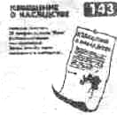
— вы взяли две или три карты приключений и, выполняя первое приключение, покидаете поле, где находился ваш путник,— оставьте на этом поле не использованные вами карты.
— вы оказались на поле, где уже лежит оставленная вами или другим игроком карта приключений. В этом случае выполните условия карты, не обращая внимания на условия самого поля. Карт больше одной — выполните их условия по порядку номеров карт.
— 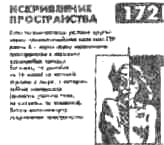
— используя свойства амулета, магического предмета или заклинания, вы не выполняете условия карты приключений — оставьте карту на поле, где в это время находится ваш путник.
— 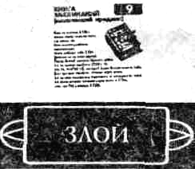
— вы взяли из колоды карту предмета, или магического предмета, или вашего друга — решайте сами, забрать его с собой или нет. Предмет, магический предмет или друг не интересует вас — оставьте их карту на поле, где вы находитесь.
— согласно условиям карты приключении вы должны изменить свои первоначальные свойства (добрый на нейтральный, нейтральный на злой и т. д.) — возьмите означенное измененное свойство и положите его на карту своего путника.
— использованные карты приключений (условия которых вы выполнили), в том числе те шкуры или другие трофеи, которые вы сдаете, следует отложить в отдельную колоду изображением вниз.
— себе вы оставляете те карты приключений, условия которых не можете немедленно выполнить.
— и последнее о карте приключений — внимательно читайте и последовательно выполняйте все то, что написано на ней (см. Приложение к Правилам).
Итак, путешествие началось... Не всегда оно будет приятным. Мир, в котором вы оказались, суров и опасен, вас ожидают встречи со множеством беспощадных и злобных созданий, а следовательно, спешить не следует, и пара уроков фехтования не помешает вам в ваших странствиях. Пришла пора узнать...
КАК ПОБЕДИТЬ ПРОТИВНИКА
Б 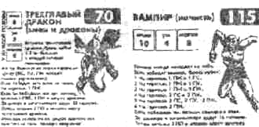
Сравнение не в вашу пользу — подумайте, нельзя ли избежать битвы и воспользоваться амулетом, заклинанием, особенностями вашего путника, гранатой и т. п. Такой возможности нет — сражайтесь.
Игрок, делающий ход после вас, бросает кубик. Сложите результат броска с пунктами силы, или ума, или магии своего противника (в зависимости от Мира, где происходит битва). Бросьте кубик сами. Сложите результат броска с соответствующим качеством своего путника; в том случае, когда вы владеете предметами, увеличивающими одно или несколько ваших качеств (кольт,, например, увеличивает пункты вашей силы (ПС) на 2 пункта), и можете ими пользоваться (т. е. имеете достаточно опыта (ПО)), или же у вас есть друзья, которые сражаются ВМЕСТЕ с вами, — добавьте их соответствующие пункты к своим.
Ваш результат превзошел результат противника — вы победили; ваш результат меньше — проиграли; при равных результатах — ничья (карта противника остается на поле битвы), и ничего не происходит, или же выполняете условия следующей карты приключений (в том случае, когда вы взяли их больше одной).
Противник победил вас — карта противника остается на поле битвы, и вам самое время вспомнить об амулетах, магических предметах, особенностях вашего путника и т. п., которые помогут вам
избежать последствий поражения. Вы не имеете таковых — выполните то, что написано на карте вашего противника.
Вы победили противника
— возьмите его карту себе. Можете сдать ее на поле «ЗАГОТКОНТОРА» или на какое-либо из других полей, указанных на карте существа, бывшего вашим противником и получить вознаграждение.
Следует уточнить, что фразы типа: «возьми его шкуру», «возьми оружие», «возьми плащ» означают, что вы берете себе карту противника.
И еще о битвах — положенные вам в результате победы пункты опыта (ПО) вы можете получить лишь после того, как сдадите трофей (возможно, что вы получите их и сразу после битвы или в случае поражения, когда это оговорено в условиях карты противника).
«Не стой между драконом и его яростью». В. Шекспир
Д 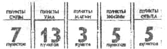
К 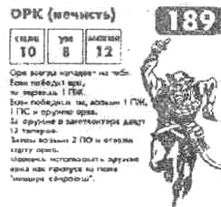 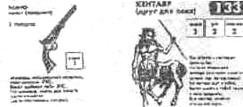
Орк тут же атакует вашего путника, и — так как битва происходит в Мире Силы — сила его равна 10 пунктам (см. карту орка).
Вам, в свою очередь, следует оценить силу вашего путника на данный момент:
— собственных пунктов силы у вас 7;
— предмет (кольт) добавит вам еще 2 пункта силы;
— 3 пункта силы даст вам ваш друг-кентавр, сражающийся вместе с вами.
Итого: ваша сила на момент битвы составляет 12 пунктов (7+2+3), и пользоваться амулетом №7 нет особой необходимости.
Игрок, делающий ход после вас, бросает кубик за орка (результат броска равен 4), и орк наносит удар с силой в 14 пунктов (10+4).
После чего вы сами бросаете кубик (результат броска — 3), сила ваша становится равной 15 пунктам (12+3), и это означает, что вы победили орка. Возьмите положенные вам в результате победы 1 пункт жизни, 1 пункт силы и карту поверженного вами орка.
Когда вы окажетесь на поле «ЗАГОТКОНТОРА», можете сдать там карту (она же оружие) орка — возьмите 12 талеров, 2 пункта опыта и отложите карту орка в колоду использованных карт приключений.
У вас есть желание заработать побольше? Что ж, карта (оружие) орка весьма ценный трофей. Она является пропуском на поле «ПЕЩЕРА СОКРОВИЩ», и стоит вам оказаться там — отложите карту орка в колоду использованных карт приключений, бросьте кубик на условия пещеры — и ни в чем себе не отказывайте!
Следует учесть, что в этом случае 12 талеров и 2 пункта опыта вы не получите.
НЕМНОГО О ГРУСТНОМ, ИЛИ ЧТО ДЕЛАТЬ, КОГДА ВЫ НЕ МОЖЕТЕ РАССЧИТАТЬСЯ
В процессе игры ваши качества будут постоянно изменяться. Вы будете терять и приобретать силу, ум, магию и жизнь, накапливать опыт, получать и тратить деньги. Помните следующее:
— до ухода в Провал ваши собственная сила, либо ум, либо магия, либо опыт (без учета дополнительных пунктов, которые дают вам предметы, магические предметы и друзья, сражающиеся вместе с вами) не могут превышать 14 пунктов каждое! Вы получили что-то сверх лимита? Увы, пункты эти пропадают даром. После ухода в Провал подобное правило не действует, и качества ваши могут возрастать беспредельно.
— 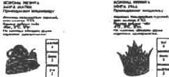
Стоит вам полностью утратить те или иные свои качества (к примеру, у вас не осталось ни одного пункта силы), а по условиям поля или карты приключений вы должны отдать еще один или несколько отсутствующих у вас пунктов — и в действие вступает правило компенсации:
— за отсутствие пунктов силы расплачиваются умом или магией (1:1);
— за отсутствующие пункты магии платят, естественно, силой или умом (1:1);
— вы остались без денег — теряете ум (1 пункт за 5 талеров);
— закончились талеры и нет других пунктов — придется расплатиться пунктами жизни (1 ПЖ.). Лишь опыт неприкосновенен. Правило компенсации распространяется также на предметы, магические предметы и амулеты:
— положим, что вы должны отдать магический предмет или амулет и не имеете его — расстаньтесь с 2 пунктами магии;
— у вас нет предмета — теряете 2 пункта силы;
— теряете лошадь или друга, которых нет — отдайте 1 пункт силы. Немудрено, что когда ваши дела пойдут совсем плохо, или (не дай-то Бог!) вам повстречается импат, и пункты вашего ума станут равны 0, как перед вами возникнет проблема:
КАК ЛЕЧИТЬ БЕЗУМИЕ (ВАШИ ПУ РАВНЫ 0)
Безумный путник не может покинуть Мир, в котором находится, и обязан идти по часовой стрелке не поле «ЛАЗАРЕТ», выполняя по дороге условия тех полей, на которых он оказался. Если по условиям поля или карты приключений он должен потерять еще один или несколько пунктов ума, то он расплачивается пунктами жизни (1:1). Условия карт телепортации, искривления пространства, очарованности и прочих перемещений не действуют на безумного, и, попадая в лазарет, он лечится до 3 пунктов ума бесплатно (и в случае необходимости — до 4 пунктов жизни, но уже за деньги).
Страшно? На самом деле — не очень. Но все же имеет смысл поговорить о чем-нибудь более приятном...
ДРУЗЬЯ, ПУТЕШЕСТВУЮЩИЕ ВМЕСТЕ С ВАМИ
Д 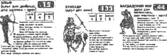
Встретив такого друга, вам стоит оценить свои свойства. Вы злой или нейтральный — деритесь;
вы добрый — знакомьтесь; друг вам понравился — возьмите его карту с собой.
Друг может сражаться вместе с вами — тогда это указано на его карте, и его соответствующие пункты на время битвы суммируются с вашими собственными; или же вместо вас, исключительно своей силой, умом или магией (само собой разумеется, при этом он не использует ваших предметов, магических предметов и амулетов).
Захваченные в случае победы трофеи ваш друг великодушно отдает вам.
Ваш друг сражался вместо вас и проиграл битву — в этом случае карта противника остается на поле битвы, карта вашего покойного друга уходит в колоду использованных карт приключений, а сами вы ожидаете очередного своего хода или выполняете условия следующей карты приключений (когда вы взяли их больше одной).
Рассмотрим еще один вариант: вы сражались вместе со своим другом и потерпели поражение — расплачивайтесь за все сами (имеет смысл вспомнить об амулетах, магических предметах и особенностях вашего путника, которыми вы можете воспользоваться после того, как проиграли битву).
Не следует забывать, что стоит вам прийти на поле, где уже находится другой путник, путник этот (по вашему желанию) должен выполнить условия карты вашего друга (отправиться на постоялый двор, вступить с другом в битву, отдать какие-то пункты...). Путник, в свою очередь, имеет право защищаться всеми доступными ему средствами: амулетом (отбросить карту вашего друга), магическим предметом (карта вашего друга может исчезнуть), гранатой (карта вашего друга уходит в колоду отложенных карт приключений) и т. п.
Ваш друг сражался с другим путником и победил — полученный трофей (в том числе 1 пункт жизни, который он заработал в случае победы над противником) он отдает вам.
Сражение закончилось вничью — ваш друг расстается с вами (оставьте его карту на поле, где была битва).
В игре случается всякое. Вполне может оказаться, что вы измените свои первоначальные свойства (добрый на нейтральный, нейтральный на злой и т. д.) и станете тем самым врагом своему другу — ваш друг покидает вас и, остается на поле, где это случилось.
Путешествовать с друзьями будет намного проще и интереснее, но, к сожалению, в Провал они вместе с вами войти не могут и остаются на соседнем с Провалом поле (по вашему усмотрению). Случится это, когда вы в первый раз попытаетесь уйти в Янтарное Королевство...
Но что, несомненно понадобится вам в ваших странствиях, так это...
ПРЕДМЕТЫ, МАГИЧЕСКИЕ ПРЕДМЕТЫ, ПРЕДМЕТЫ, ПРИНАДЛЕЖАЩИЕ ВЛАДЕЛЬЦУ, И АМУЛЕТЫ
Перед началом игры внимательно прочитайте торговый каталог и ознакомьтесь с предметами и амулетами, перечисленными в нем. Все они могут пригодиться в пути, но помните: без лошади или друга путник имеет право нести не более 4 предметов, магических предметов, предметов, принадлежащих владельцу, и амулетов, и если таковых у вас более чем 4 — оставьте ненужные вам на том поле, где вы нашли или купили что-то сверх лимита.
Вы взяли второй магический предмет — решайте сами, какой из них вы оставляете себе, Отложенный магический предмет оставьте на поле, где в это время находится ваш путник.
Выполняя условия карт приключений либо поля, на котором оказался ваш путник, вы должны расстаться с каким-то из своих предметов, магических предметов или амулетов. В этом случае — вы сами выбираете, что именно вам отдать (верните карту на вспомогательное поле предметов или в колоду использованных карт приключений).
Н 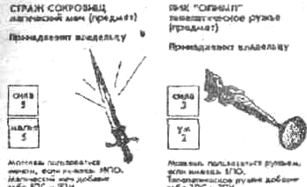
Предметы, принадлежащие владельцу, вы можете утратить, лишь выполняя условия карт приключений или поля, где оказался ваш путник.
Для того чтобы пользоваться любым предметом, а уж тем более — магическим предметом или
амулетом, естественно, нужен опыт, но это не служит препятствием к обладанию ими: владейте,
носите их с собой, пока не накопите достаточно пунктов опыта (ПО), чтобы пользоваться.
Но что это? В прозрачном воздухе послышался хрустальный звук рожка, и, продираясь сквозь густые заросли, скачет во весь опор... оборотень с кольтом в руке. Конечно же, это...
ОХОТА НА ЗВЕРЯ
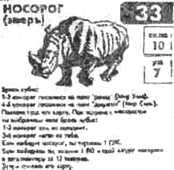
Как вы уже убедились, совсем непохожие герои узнали о смерти старого короля.
Настало время рассмотреть...
ДУЭЛЬНЫЙ КОДЕКС
Вы можете вызвать на поединок любого из путников (не допускаются поединки между добрыми путниками), и происходит это так:
— Вы находитесь на одном или на соседнем поле с другим путником, и ваша очередь делать ход — вы вместо хода можете послать вызов на дуэль. Ваш противник в этом случае обязан подчиниться.
Битва происходит обычным способом, как и с любым другим противником. Обе стороны имеют право использовать свои предметы, амулеты, друзей, сражающихся вместе с ними, особенности своего путника и т. п.
Проигравший теряет 1 пункт жизни, и победитель забирает его себе.
В лазарете, заготконторе и в обменных пунктах поединки запрещены!
Во время путешествия ваш путник может оказаться в весьма необычных, странных местах. Поговорим о них.
ПЕРЕВАЛ И ХРАМ БААЛЯ
Оказавшись на поле «ПЕРЕВАЛ», автоматически переходите на сектор «осыпь» и двигаетесь по стрелкам, выполняя условия тех секторов, где оказался ваш путник (не забывайте о правиле компенсации). Так продолжается до тех пор, пока вы не попадете на сектор «выход на поле «крепость» (выполните там условия поля).
Преодолеть перевал вы должны за один тур, независимо от количества бросков кубика.
Подобным же образом путешествуете по храму Бааля.
На перевале или в храме Бааля, вы не имеете права пользоваться своими предметами, магическими предметами, амулетами либо свойствами своего путника.
ОБМЕННЫЙ ПУНКТ
В одном из обменных пунктов вы можете купить любое количество игровых пунктов (не свыше 14, конечно) из расчета 5 талеров за 1 пункт.
ЛАЗАРЕТ
В лазарете вас могут бесплатно вылечить от безумия до 3 пунктов ума) или восстановить вашу жизнь до 4 пунктов (стоимость лечения — 2 талера за 1 пункт жизни) в том случае, когда у вас их менее 4.
ЗАГОТКОНТОРА
Вы выиграли битву и решили сдать завоеванный трофей в заготконтору. Для этого вам нужно остановиться проходом на поле «ЗАГОТКОНТОРА», получить вознаграждение, указанное на карте вашего противника, и отложить карту трофея в колоду использованных карт приключений.
Вы сами решаете — сдать карту трофея на поле «ЗАГОТКОНТОРА» или на каком-то из других полей, указанных на карте противника.
БАНК И ЧЕРНАЯ КАССА МАФИИ
Вам повезло, и вы заработали деньги (в том числе должны получить их на поле «БАНК») — возьмите положенные вам талеры на вспомогательном поле пунктов и денег.
Деньги, которые находятся на поле «БАНК», останутся там до тех пор, пока кто-либо из путников не ограбит его. Для того, чтобы налет удался необходимо победить всех охранников: вы проиграли хотя бы одному из них — теряете 1 пункт жизни, и ограбление на этом заканчивается. То же самое касается и черной кассы мафии.
ТОРГОВЫЕ СДЕЛКИ, ИНФЛЯЦИЯ
О 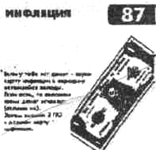
Цены — договорные. Возможен любой обмен по взаимному согласию. Предметами торговых сделок не являются друзья и игровые пункты.
Инфляция: вы взяли карту инфляции и, выполняя ее условия, должны расстаться с определенной частью своих денег — сумму, которую вам надлежит отдать, всегда округляете в большую сторону (должны отдать 1/3 от 2 талеров — вы отдаете 1, от 20 — 7 и т.д.).
Путешествуя по различным Мирам, ваш путник становится сильнее, умнее и опытнее. Он учится пользоваться заклинаниями и магическими предметами. И вскоре настанет тот час, когда вы почувствуете в себе силы вступить в битву за обладание Короной.
Допустим, что личные качества вашего путника (без учета принадлежащих ему предметов, магических предметов, предметов, принадлежащих владельцу, и друзей, путешествующих вместе с ним) достигли 11-14 пунктов силы, ума, магии и опыта, и вы готовы к решающей битве! Попытайтесь пройти через один из Провалов. Друзья провожают вас до него и остаются на соседнем с Провалом поле. Вы входите в Провал... а когда пройдете через него — окажетесь в совершенно другом мире...
ЭМБЕР, ИЛИ ЯНТАРНОЕ КОРОЛЕВСТВО
Путешествие по Янтарному Королевству происходит на игровом поле «КОРОЛЕВСТВО ЭМБЕР», и, когда вы пройдете через Провал и окажетесь на дороге в столицу королевства, исчезают все ограничения — в Янтарном Королевстве вы можете иметь любое количество собственных пунктов силы, ума и магии. Пункты вашего опыта отложите на вспомогательное поле пунктов и денег — они не понадобятся вам во время путешествия к дворцу.
ПУТЕШЕСТВИЕ В СТОЛИЦУ ЯНТАРНОГО КОРОЛЕВСТВА
Путешествие в столицу не назовешь слишком приятным — вы двигаете игровую карту своего путника согласно результата броска на ход (один ход за один тур игры), сворачивая на четных и нечетных развилках и строго выполняя условия того поля, где вы оказались (помните о правиле компенсации).
Случилось так, что вы погибли в дороге — примите наши соболезнования; прошли весь путь и оказались в столице — вы настоящий принц!
СТОЛИЦА ЯНТАРНОГО КОРОЛЕВСТВА
Перетасуйте карты принцев и вытащите одну из них. Узнайте, кто вы на самом деле (Мы рады поздравить вас ваше высочество!), и замените игровую карту на подставке. Кстати, в столице имеется лавочка, где по грабительскому курсу меняют все, что вы заработали, на пункты жизни.
Наш вам совет: стоит в нее зайти — в дальнейшем игра идет исключительно на пункты жизни. Вы уже видите изящные башни дворца, и горожане почтительно уступают вам дорогу, но главное испытание еще впереди, и это...
ЛАБИРИНТ
Путь через лабиринт достаточно прост: один круг за один ход. Из центра лабиринта вы попадаете во дворец.
ДВОРЕЦ
Вам надлежит знать, что лишь первый из принцев идет по дворцовым покоям. Второй и последующие претенденты на Корону тут же переносятся на арену, где либо вступают в поединок с Королем (если таковой уже имеется и после коронации ожидает их прибытия), либо сами пропускают несколько туров игры в ожидании, пока первый из принцев закончит свое путешествие по дворцовым покоям, будет коронован и окажется на арене.
КОРОНАЦИЯ
Когда первый из принцев входит в тронный зал и возлагает на себя Корону — закрываются все Провалы, и те из путников, которые не успели покинуть мир приключений и пройти в Янтарное Королевство, уже не смогут этого сделать.
Для них игра закончена.
Вполне возможно, что путники или принцы, находящиеся в это время в Королевстве Эмбер, окажутся недовольны подобным исходом. Они имеют право пройти весь путь до дворца (Король ожидает их на арене) и возразить своему монарху — с оружием в руках!
БИТВА ЗА КОРОНУ
Итак, принц (или принцы) решили испытать судьбу и вызывают Короля на бой. Поединок происходит следующим образом:
— король дважды бросает кубик, следующим (также дважды) бросает претендент (претендентов больше одного — они бросают кубик по очереди по часовой стрелке), и тот, кто в сумме набрал меньше очков, теряет 1 пункт жизни.
— двое (трое, четверо) из вступивших в битву набрали меньшее количество очков, чем у одного из их противников — все они теряют по 1 пункту жизни.
— противники набрали одинаковое количество очков — каждый из них теряет по 1 пункту жизни;
— двое (трое) набрали одинаковое количество очков, но большее; чем у других противников — они теряют по 1 пункту жизни, а их менее удачливые соперники — по 2 пункта жизни.
Бой продолжается до тех пор, пока не останется в живых только один игрок — он-то и будет владеть Короной!
Успехов вам» ваше величество!
Король умер! Да здравствует король!
РЕКОМЕНДАЦИИ К ИГРЕ
1. В начале игры желательно путешествовать по тому Миру, где вы имеете максимальное количество пунктов (пунктов силы, либо пунктов ума, либо пунктов магии).
2. Помните: во время путешествия сильные путники становятся еще сильнее и богаче; слабые — медленно гибнут. Старайтесь не иметь при себе крупных сумм денег к избытка трофеев. Покупайте в обменных пунктах силу, ум и магию. Опыт придет со временем.
3. Не забывайте, что в лазарете за весьма умеренную плату вам могут восстановить пункты жизни до
4. Путешествуя по игровому полю, путнику желательно иметь при себе амулеты — их свойства могут спасти вас в трудную минуту — и предметы — они добавят силу, ум и магию вашему путнику.
5. Путешествуя на лошади, вы можете не только иметь большее количество предметов, но и, по своему желанию, добавить 1 к результату броска на ход.
6. Игра рассчитана на разные уровни сложности (в зависимости от опыта игрока), и чем решительнее вы будете использовать предоставленные вам возможности (участвовать в сделках с контрабандистами, грабить банк или черную кассу мафии, играть на бирже, владеть короной регента одного из Миров, пользоваться колдовством и т. п.), тем раньше уйдете в Провал.
7. С противником, заведомо более сильным, чем вы, вам стоит расправиться самым решительным образом — гранатой.
8. Не следует задерживаться в Мире приключений после того, как вы набрали от 11 до 14 пунктов силы, пунктов ума, пунктов магии и пунктов опыта.
УДАЧИ ВАМ, ГОСПОДА!
ПРИЛОЖЕНИЕ
СПИСОК ДОПОЛНЕНИЙ К УСЛОВИЯМ КАРТ ПРИКЛЮЧЕНИЙ
1. ПАВШИЙ РЫЦАРЬ — вы взял себе карту павшего рыцаря — проследуйте по указанному на карте маршруту, не забывая при этом придерживаться очередности полей и выполнять их условия. Дорогу выбираете сами, и стоит вам пройти весь маршрут, как вы становитесь регентом Мира Силы (возьмите на вспомогательном поле предметов корону регента Мира Силы). Ограничение в 14 ПС не действует на регента Мира Силы, но до тех пор, пока ваш путник не имеет достаточно опыта (10 ПО), владыкой Мира Силы он не является (не может использовать дополнительные игровые пункты короны и иметь неограниченное количество собственных пунктов силы).
Вы потеряли корону, и у вас было свыше 14 ПС — вам следует отложить пункты силы до 14.
2. РЫЦАРЬ ОБЕРОНА — вы проиграли рыцарю Оберона — возьмите 3 пункта магии и отложите 3 пункта жизни.
3. ВЛЮБЛЕННАЯ ВЕДЬМА — любая из женщин (в том числе противник или путник) при встрече с влюбленной ведьмой попадает на постоялый двор (путник выполнит там условия поля).
5. НЕВЕЗЕНИЕ — выполняя условия карты невезения, путешествуете по Миру, в котором находитесь.
9. КНИГА ЗАКЛИНАНИЙ — вы вызвали призрака, но он погиб в битве — отложите карту книги в колоду использованных карт приключений (условия карты противника не выполняете, и карта его остается на поле битвы).
13. ЧАША ГРААЛЯ — вы взяли карту чаши, и путник ваш изменил свое свойство (злой на нейтральный; нейтральный на добрый; добрый получает 1 пункт жизни и 1 пункт магии) — возьмите карту означенного измененного свойства, положите ее на карту своего путника и бросьте кубик на условия чаши Грааля.
18. ТЕЛЕПАТ — имея другом телепата, вы можете перед битвой в Мире Ума или в Мире Магии воспользоваться его свойствами: при результате 1 — 3 противник не нападает (карта противника остается на поле, где вы его повстречали). Противник бьется силой или магией в любом из Миров — телепат бессилен защитить вас.
21. СТРАННИКИ — решайте сами: восстановить свои качества (ПС, ПУ, ПМ, ПЖ) и золото (талеры) до уровня, с которого вы начали игру (см. карту своего путника), либо принять дар странников — 2 пункта жизни, 1 пункт силы и 2 пункта магии.
22. ГНОМ — карту гнома вам следует положить на поле «ЗОЛОТАЯ ШАХТА».
24. ХАМЕЛЕОН — вы победили хамелеона, но не имеете 6ПО — сдайте его шкуру в заготконтору. Не получилось сдать шкуру за 3 хода — оставьте карту хамелеона на том поле, где оказались в данный момент. Хамелеон оживает и нападет на путника, стоит ему оказаться на поле, где вы оставили шкуру хамелеона. Имеете 6 ПО и шкуру хамелеона - перед битвой в Мире Ума или в Мире Магии можете воспользоваться ей: при результате 1 — 3 противник не нападает (карта противника остается на поле).
25. ПИОНЕР -— вы повстречали пионера, а он украл у вас предмет и скрылся на соседнем поле — предмет этот он отдает своему другу (друг пионера пользуется им согласно своего опыта). Вы путешествуете с пионером, и вам повстречался чекист — пионер переходит на его сторону, и они вместе нападают на вас (их ПС, или ПУ, или ПМ в битве удваиваются).
25. РОЙ ШЕРШНЕЙ — имеете огонь, когда у вас есть карманный дракончик.
29. КОЛДОВСТВО — вам следует положить карту колдовства на поле, где находится карта заколдованного вами противника (его ПС, либо ПУ, либо ПМ в битве удваиваются).
31. ТРОЛЛЬ — вступая в сделку с троллем, вы не теряете ничего, за исключением 20 талеров.
39. ОЧАРОВАННОСТ Ь — выполняя условия карты очарованности, путешествуете по Миру в котором находитесь.
40. ВСАДНИК НА ДРАКОНЕ — вы победили всадника на драконе — у вас есть право не сдавать шкуру дракона, используя ее как защиту перед битвой: при результате 1 — 2 противник не нападает (карта противника остается на поле, где вы его повстречали).
41. ЧЕЛОВЕК-ЗМЕЯ — вы проиграли битву с человеком-змеей и взяли с собой его карту — при встрече со змеями и драконами вначале сражаетесь с противником, а уж затем с человеком-змеей.
42. КАМЕННЫЙ ИДОЛ — при встрече с каменным идолом вам не помогут бронежилет, кольчуга и амулеты (в том числе амулет N7).
43. ЧЕКИСТ - вы победили чекиста — оставьте себе тех друзей, которые подходят вам по свойствам; с теми, кто оказался вашим врагом, придется вступить в сражение или выполнить условия их карт. Полученными у чекиста трофеями вы можете пользоваться согласно своего опыта. Чекист победил вас — оставьте себе магические предметы и предметы, принадлежащие владельцу.
44. БАГДАДСКИЙ ВОР — стоит багдадскому вору появиться в заготконторе, как она закрывается, и вы не имеете права сдавать там шкуры и другие трофеи, пока кто-нибудь из путников не заберет вора с собой или не уничтожит его гранатой. Для друга багдадский вор ворует любой предмет или амулет, и путник пользуется ими согласно своего опыта (см. торговый каталог).
46. ДЕРЕВЯННЫЙ ЧЕЛОВЕК — имеете огонь, когда у вас есть карманный дракончик.
47. ДВОРЕЦ — лишь терпеливый войдет во дворец.
49. ЦЫГАНЕ — пользуетесь амулетом № 1 согласно своего опыта; должны получить амулет №1, но его нет на вспомогательном поле предметов — возьмите 3 пункта магии.
56. НЕТОПЫРЬ — имеете огонь, когда у вас есть карманный дракончик.
58. ПРОКЛЯТИЕ КОЛДУНА — пока не избавитесь от проклятия, путешествуете по Миру, в котором вас проклял колдун.
59. ТРИФФИД — триффид атаковал вас, и вы парализованы — до тех пор остается на поле, где повстречали его, пока во время очередного своего броска на ход не выбросите от 9 до 12 очков с двух бросков кубика.
60. ТРИФФИД — см. N59.
61. ГРИФОН— с грифоном сражаетесь без помощи предметов, магических предметов и амулетов.
62. ИСТОЧНИК ЖИЗНИ — когда кто-либо из путников берет с карты источника 1 пункт жизни, вам следует положить на нее на 1 пункт меньше того, что было на карте источника. Закончились все пункты жизни и источник иссяк — отложите его карту в колоду использованных карт приключений.
64. ЗОЛОТОИСКАТЕЛЬ — на поле «ЗОЛОТАЯ ШАХТА» три раза подряд копаете бесплатно, не покупая снаряжение.
67. ИСТОЧНИК СИЛЫ — см. № 62.
69. ГРАНАТА — вы уничтожили противника гранатой — его шкура и прочие трофеи не принадлежат вам (следует отложить карту противника в колоду использованных карт приключений; трофеи, которые он имел,— на вспомогательное поле предметов). Учтите — гранатой вы можете уничтожить лишь одного противника. Стоит вам оказаться на одном, либо на соседнем поле с другим путником -у вас есть право воспользоваться гранатой против него (путник теряет 1 пункт жизни) или против его друга (в этом случае путник обязан отложить карту погибшего друга).
72. ЧЕРНЫЙ ДВОЙНИК — вы проиграли сражение с черным двойником, и он преследует вас (возьмите с собой его карту) — в этом случае черный двойник нападает на вашего путника в любом из Миров после каждого сделанного вами хода (сражаетесь в черным двойником, а уж затем — выполняете условия поля).
73. КОШЕЛЕК — в споре за обладание кошельком участвуют все путники (включая того, кто нашел кошелек), и те из них, у кого выпал равный наибольший результат, продолжают дискуссию (т.е. перебрасывают кубик).
80. НАЛОГОВЫЙ ИНСПЕКТОР — налоговый инспектор путешествует вместе с вами (но не становится вашим другом) до тех пор, пока вы не рассчитаетесь.
82. ГЛАШАТАЙ — условия карты глашатая подобны условиям карты павшего рыцаря (№ 1), за тем исключением, что вы становитесь регентом Мира Ума и можете иметь неограниченное количество пунктов ума (регент Мира Силы имеет неограниченное количество собственных пунктов силы).
84. КОММАНДО — коммандо победил вас — магические предметы и предметы, принадлежащие владельцу, вы оставляете себе.
85. ПЕНТАГРАММА — переходят в пункты магии и суммируются (ПС+ПУ+ПМ) лишь ваши собственные качества (дополнительные игровые пункты предметов и ваших друзей в этом случае не учитываете).
88. МАГНИТНЫЙ УДАР — предметы ремонтируете в тех местах, где вы купили или нашли их (останавливаетесь там проходом); магнитному удару не подвержены предметы, принадлежащие владельцу.
89. ПРОКЛЯТИЕ НА ШЛЕМ — шлем вашего путника исчез, когда у него было 3 пункта ума или менее того — путник ваш становится безумным (см. «КАК ЛЕЧИТЬ БЕЗУМИЕ»).
91. ДОМОВОЙ — при встрече с домовым вы попадаете в поле, с которого начали игру (см. карту вашего путника), и выполняете его условия.
92. ЛЮДИ-МУРАВЬИ — вы проиграли битву людям-муравьям — их карта остается на поле сражения, а вы отправляетесь на «ПЕРЕВАЛ» (выполняете там условия поля).
96. КОЛДОВСТВО — колдовство не действует на того, кто им воспользовался.
99. ОБИЖЕННЫЙ — 12 талеров вы получите после того, как выполните условия поля «КОННЫЕ ВАРВАРЫ».
100. ПРОКЛЯТИЕ НА ПРЕДМЕТ — проклятию не подлежат магические предметы и амулеты.
103. МАГ — выбирайте сами: восстановить все свои качества (ПС, ПУ, ПМ, ПЖ) до того уровня, с которым вы начали игру (см. карту вашего путника), либо воспользоваться даром мага — 2-мя пунктами жизни, 2-мя пунктами магии, и 1- м пунктом опыта. После того, как злой путник сделал свой выбор и был вознагражден — маг отправляет его на перевал (злой обязан выполнить там условия поля).
111. СТРАЖ. СОКРОВИЩ — сокровище стража получит тот, кто имеет огнестрельное оружие или друга, который охотится вместо него. У стража не осталось магического меча и мифриловой кольчуги — вам следует отложить его карту в колоду использованных карт приключений.
112. БРОДЯЧИЙ ЛЕКАРЬ — бродячий лекарь готов восстановить пункты вашей жизни до 6, а пункты силы, пункты ума и пункты магии — до 5 пунктов. Вы не нуждаетесь в услугах лекаря - оставьте его карту на поле, где повстречали.
113. МАРКИТАНТКА — вы нравитесь маркитантке, и она дарит вам амулет — возьмите любой из амулетов на вспомогательном поле предметов (пользуетесь согласно своего опыта).
119. ДОЛГ — вы задолжали кому-либо из игроков — они собираются вместе и решают, кому именно вы отдаете деньги; те, у кого равный наибольший результат, перебрасывают кубик. Не можете рассчитаться немедленно — возьмите карту (вексель) долга с собой (вернете долг, когда посчитаете нужным).
123. КОШЕЛЕК — вы взяли карту кошелька, на вас напал грабитель, и вы проиграли сражение с ним — карту кошелька (под охраной грабителя) оставьте на поле, где была битва: грабитель нападет на каждого, кого повстречает на этом поле.
124. ИМПАТ — при встрече с импатом вы дважды бросаете кубик, не обращая внимание на то, имеете шлем или нет.
126. ЗАБРОШЕННЫЙ ДОМ — условия этой карты те же, что и условия карты павшего рыцаря (№1), разница в том, что стоит вам стать регентом Мира Магии — и у вас появится шанс иметь неограниченное количество собственных пунктов магии.
127. УЧИТЕЛЬ БОЕВЫХ ИСКУССТВ — учитель боевых искусств преподает вам три урока (трижды бросаете кубик и каждый раз приобретаете или теряете игровые пункты).
128. ГОРИЛЛА — вы дрались с гориллой, и она победила вас — вам следует положить ее карту, а также карту вашего предмета, либо магического предмета, либо амулета, либо игровые пункты (согласно правила компенсации) на поле «ДЖУНГЛИ». Вы повстречали там гориллу и победили ее — пользуйтесь принадлежащими ей предметами согласно своего опыта.
131. НОЧЬ ПОЛНОЛУНИЯ — волк возвращается в логово после битвы с добрыми и нейтральными путниками (а именно — на поле, где он превратился в оборотня).
132. ВОЛКОЛАК — волколак использует в битве те пункты, которые он отвоевал у путников (дополнительные пункты вам следует положить на карту волколака).
134. СФИНКС — от сфинкса не защищают амулеты и магические предметы. Заклятие, которое дает вам сфинкс, находится на вспомогательном поле предметов,
139. СФИНКС — см. №134.
140. ПОДКОВА — имея карту подковы, вам ничего не стоит отыскать клад на поле «ВЕДЬМИН ЛУГ».
148. ИСТОЧНИК УМА — см. № 62.
149. БИЗОН — решайте сами, на каком из полей «ПРЕРИЯ» будет пастись бизон.
151. ЖРЕЦЫ ХРАМА БААЛЯ — полученный у жрецов амулет вам следует взять на вспомогательном поле предметов.
163. МУХОМОР — переходят в пункты силы и суммируются (ПС+ПУ+ПМ) лишь ваши собственные пункты (без учета дополнительных пунктов предметов и ваших друзей).
164. КОРЕНЬ ЛОФОФОРЫ — переходят в пункты ума и суммируются (ПС+ПУ+ПМ) исключительно ваши собственные пункты (без учета дополнительных пунктов предметов и ваших друзей).
170. ПЕЩЕРНЫЙ ЛЕВ — вы приручили пещерного льва и путешествуете вместе с ним — в этом случае не можете сдать шкуру льва в заготконтору.
173. ПОРОЧНЫЙ КРУГ — выходите из порочного круга за 1 тур, независимо от того, сколько раз бросаете кубик.
181. ДРАКОН, ПРИНОСЯЩИЙ УДАЧУ — вы пользуетесь свойствами дракона: по условиям поля должны взять 1 карту приключений — берете их 2 и выполняете условия той, которая вам больше нравится; должны взять 2 карты — берете 4 и оставляете себе 2; должны взять 3 — берете 6 и оставляете 3. Оставшиеся карты приключений вы возвращаете в середину колоды.
182. ИСТОЧНИК МАГИИ — см. № 62.
187. ВОИН ХАОСА — при встрече с воином Хаоса все ваши качества (ПС, ПУ, ПМ) падают до 8 пунктов каждое (пункты отложите на вспомогательное поле пунктов и денег); все ваши качества ниже 8 пунктов — оставьте карту воина на поле, где вы повстречали его.
188. ПРИШЕЛЬЦЫ — случилось так, что вы проиграли пришельцам — карта пришельцев остается на поле битвы (вы попадаете в эпицентр и до тех пор, пока не освободитесь; выполняете условия поля «ЭПИЦЕНТР»).
190. НАВОДНЕНИЕ — после наводнения у вас остаются магические предметы и предметы, принадлежащие владельцу.
193. ЧЕРНАЯ КОШКА — выполняя условия карты черной кошки, путешествуете по Миру, в котором находиться.
196. СФИНКС — см. № 134.
© 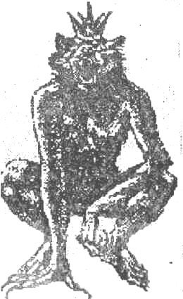
© Издательство «Сибирская речь», 1994.
© ТОО «Герольд», 1994.
© АО «Выбор 92», 1994.
© Художественное оформление игры «Корона Эмбера», С. Лешта, 1994. © Художественное оформление «рутля1»а- к игре «Корона Эмбера», М. Шараев, 1994.
© Макет и верстка, ПКФ «Благо», 1994. © Макет и верстка, АО «Аура», 1994. © Компьютерная графика, В. Лисовский, 1994.